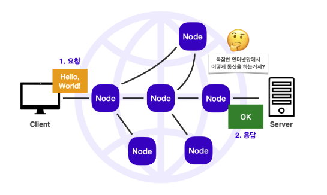
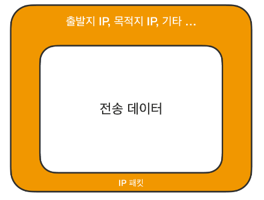
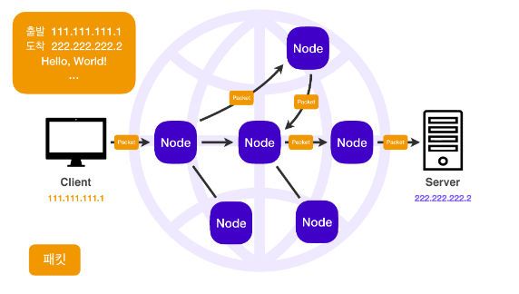
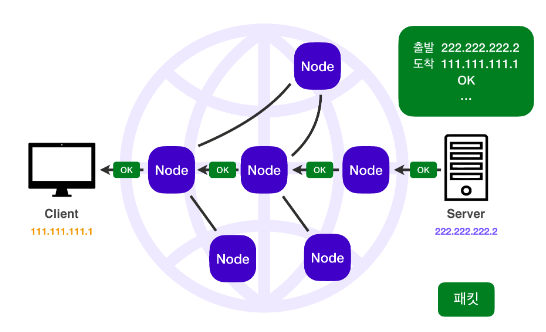
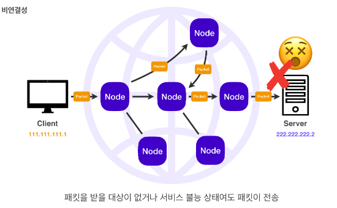
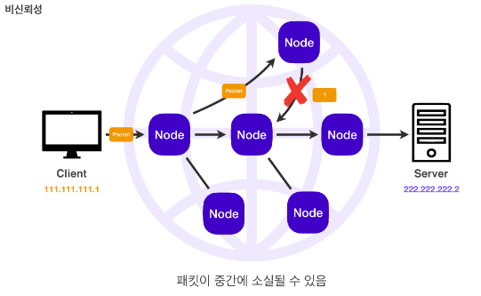
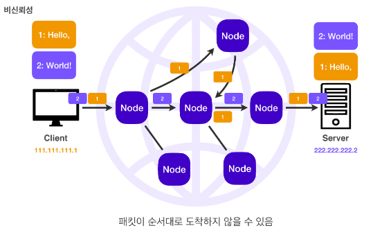

복잡한 인터넷 망 속 수많은 노드들을 지나 클라이언트와 서버가 통신하는 방법은 IP(인터넷 프로토콜) 주소를 컴퓨터에 부여하여 이를 이용해 통신하는 방법이다.
IP는 지정한 IP 주소(IP Address)에 패킷(Packet)이라는 통신 단위로 데이터 전달을 한다.
IP Packet에서 Packet(패킷)은 pack과 bucket이 합쳐진 단어로 소포로 비유할 수 있으며 IP Packet은 이를 데이터 통신에 적용한 것이라고 보면 된다.
IP Packet은 우체국 송장처럼 전송 데이터를 무사히 전송하기 위해 출발지 IP, 목적지 IP와 같은 정보가 포함되어 있다.

패킷 단위로 전송을 하면 노드들은 목적지 IP에 도달하기 위해 서로 데이터를 전달한다.
이를 통해 복잡한 인터넷 망 사이에서도 정확한 목적지로 패킷을 전송할 수 있다.

서버에서 무사히 데이터를 전송받는다면 서버도 이에 대한 응답을 돌려줘야 한다.
서버 역시 IP 패킷을 이용해 클라이언트에 응답을 전달한다.

정확한 출발지와 목적지를 파악할 수 있다는 점에서 IP 프로토콜은 적절한 통신 방법으로 보이지만 한계가 존재한다.
만약 패킷을 받을 대상이 없거나 서비스 불능 상태여도 클라이언트는 서버의 상태를 파악할 방법이 없기 때문에 패킷을 그대로 전송하게 된다.

중간에 있는 서버가 데이터를 전달하던 중 장애가 생겨 패킷이 중간에 소실되더라도 클라이언트는 이를 파악할 방법이 없다.

전달 데이터의 용량이 클 경우 이를 패킷 단위로 나눠 데이터를 전달하게 되는데 이때 패킷들은 중간에 서로 다른 노드를 통해 전달될 수 있다.
이렇게 되면 클라이언트가 의도하지 않은 순서로 서버에 패킷이 도착할 수 있다.
